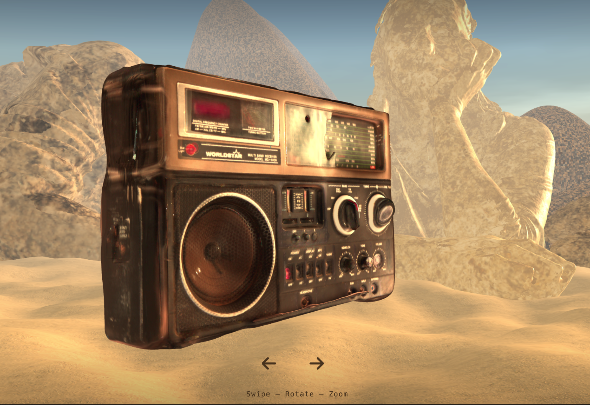
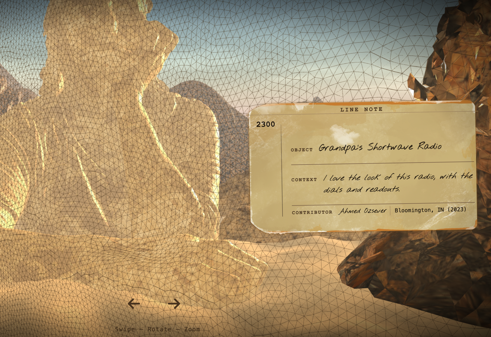
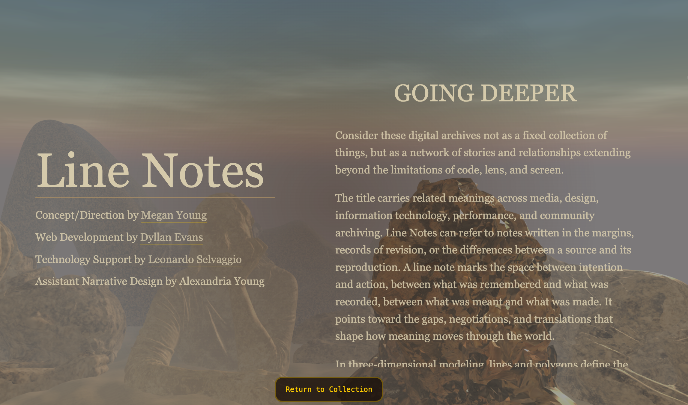
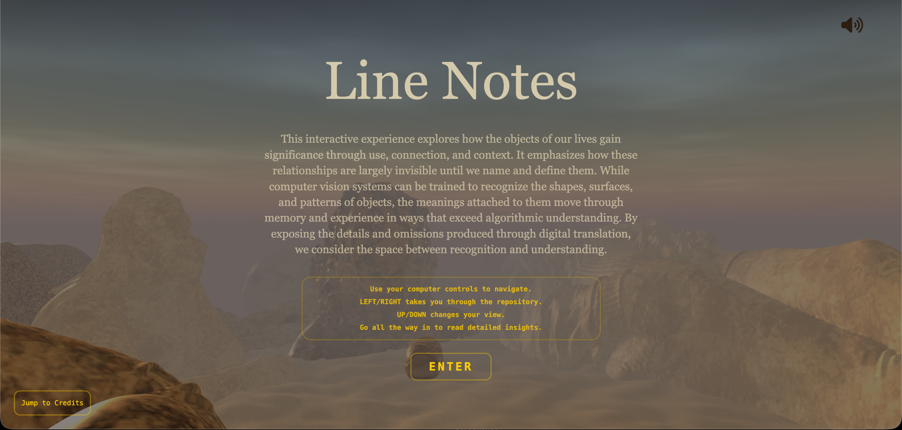
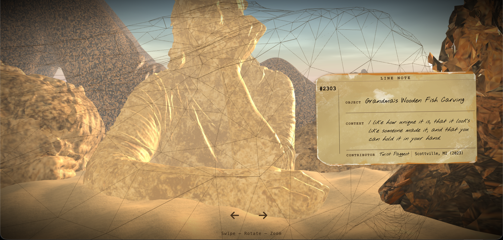

Line notes is a project from a collection of 3D scanned items from families heritage. This was put together by Megan Young and other students. Young came to me with this project in the Spring of 2026 and wanted to take her VR world, "With-What", and create into an interactive web based application that can be accessed anywhere outside of an art studio. I worked beside her to gather ideas and exact looks on how she wants to create a digital world from scratch, with over 20 different objects that represent the past of families and selves. These items were scanned and put into the VR world, and explores the limitations or expections of digital translation of physical objects. The goal of this project was to create a digital space that can be accessed by anyone, anywhere, and to create a space that is interactive and immersive. This project is still underway, but it is assiable through the link above.

Each object is represented with a tag and a wireframe of the object once zoomed in. This is to show the object in a more digital way, translated from physical being to numbers and data. The tag represents the object in a showcase, with a museum and vintage feel. The tag was created by me and all dynamically coded for each object with Javascript. Through the wireframe, you can see the background of people. This is the world that Young created with 3D scans of people. They are highly detailed with rock textures, but cannot be interacted with. This is on purpose, as they are structures for the responitory. This project is not fully completed, but it shows a continous work of a digital space that can be accessed by anyone. In the coming monthes, showcases will be available. The dates and links will appear here when announced.




